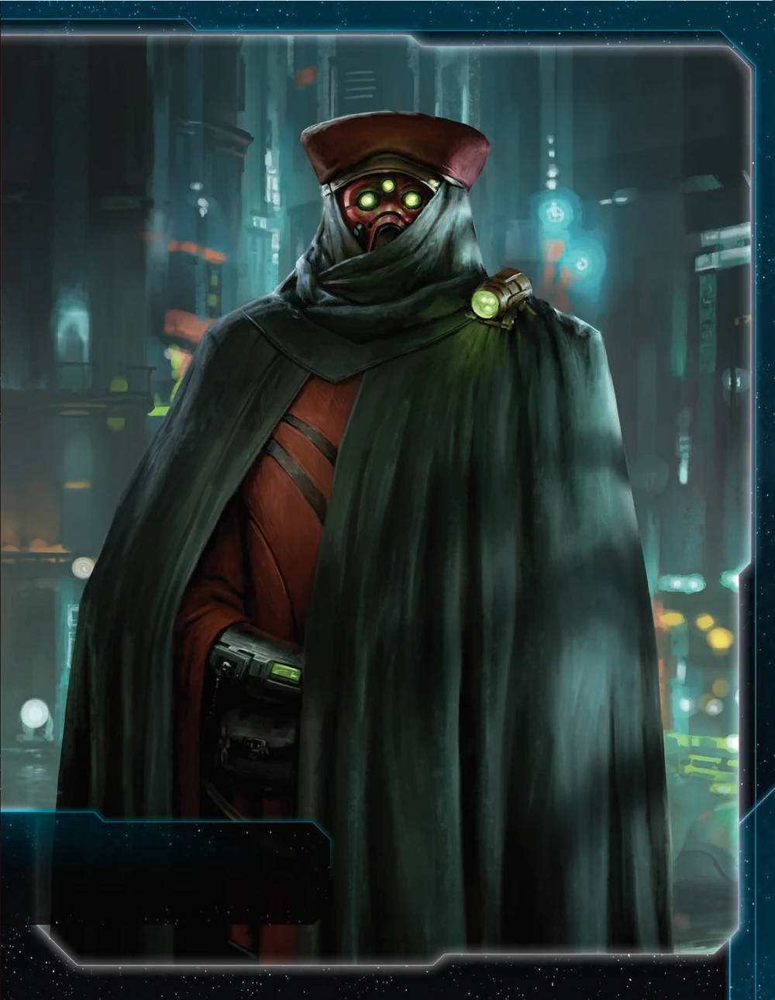

The Nomad are a unique agent-focused faction with THREE agents instead of one. This faction excels at agent manipulation, voting rewards through Future Sight, and flagship teleportation via mech placement. Nomad isn’t about raw military power—it’s about information control, political maneuvering, and leveraging your triple-agent advantage to create value from every transaction.
The payoff? Having 3x the agent uses of normal factions, gaining trade goods from correct agenda predictions, and teleporting your flagship across the map via mech positioning. When you master agent timing and political reads, every agenda phase becomes a trade goods generator and every transaction leverages your agent superiority.
Playing Nomad is like being a political broker with perfect information. Your The Company ability gives you 3 agents (Thundarian, Artuno, Field Marshal Mercer), your Future Sight rewards correct voting/predictions with trade goods, and your Memoria flagship can teleport to systems with your mechs. You’re not trying to win through conquest—you’re winning through transactions, political capital, and strategic positioning.
The key strength of Nomad is action economy. Three agents means 3x the exhausts, 3x the favors to trade, and 3x the tactical options each round. Understanding when to exhaust each agent—and which to save for critical moments—separates good Nomad players from great ones.
Opponents will underestimate your political power until you’ve extracted 3 separate favors for your agent uses and gained 6+ trade goods from Future Sight predictions. That moment when you’ve traded all 3 agents for alliance promissories and scored objectives off those deals? Pure efficiency.
Home System: (No traditional home system - Nomad is special)
Commodities: 4
Notes: Nomad has no traditional home system in PoK. This means you can score objectives even without controlling “planets in your home system.” Your 4 commodities fuel your trading-heavy playstyle. High commodity count pairs excellently with Trade strategy card and your Future Sight trade good generation.
Notes: You start with your flagship on the board, which is rare. The Memoria flagship has AFB 8(x3)—devastating against fighter swarms. Your starting fleet is mobile but not particularly strong in combat. Focus on expansion and mech placement R1-2 rather than aggression.
The Company (Faction Ability): During setup, take the 2 additional Nomad faction agents and place them next to your faction sheet; you have 3 agents.
Your defining ability. You have THREE agents instead of one—Thundarian (combat reroll), Artuno (store TGs), and Field Marshal Mercer (move ground forces). This is absurd action economy. Each agent can be traded separately, exhausted for different tactical purposes, and creates political capital.
Future Sight (Faction Ability): During the agenda phase, after an outcome you voted for or predicted is resolved, gain 1 trade good.
Voting rewards ability. If you vote correctly OR predict correctly (via Riders/Xxcha), gain 1 TG. Over a game, this generates 8-15 TGs just from voting with the majority. Incentivizes political reads and coalition-building.
Starting Technologies:
Sling Relay (Blue) - During your tactical actions, if you do not control a planet in the active system, exhausted planets you control refresh before you produce units.
Notes: Incredibly powerful starting tech. Sling Relay lets you double-tap planets for production—exhaust for resources, produce, then they refresh for next activation. This effectively doubles your economy when expanding into unoccupied systems. Excellent for R1-2 expansion.
Faction Technologies:
Memoria II (GBY): Nomad Flagship - Cost: 8 | Combat: 5 (x2) | Move: 2 | Capacity: 6 | Sustain Damage | ANTI-FIGHTER BARRAGE 5 (x3)
You may treat this unit as if it were adjacent to systems that contain 1 or more of your mechs.
Upgraded flagship with Move 2 (instead of 1), Capacity 6 (instead of 3), and can be treated as adjacent to systems with your mechs (enables mech-based teleportation).
Temporal Command Suite (Y): After any player’s agent becomes exhausted, you may exhaust this card to ready that agent; if you ready another player’s agent, you may perform a transaction with that player.
Agent-ready tech. When any agent (yours or opponents’) is exhausted, exhaust this to ready it. If you ready an opponent’s agent, make a transaction with them. Incredible political leverage and allows double-use of agents.
Agent - The Thundarian:
After the “Roll Dice” step of combat: You may exhaust this card. If you do, hits are not assigned to either player’s units. Return to the start of this combat round’s “Roll Dice” step.
Combat reroll agent. After dice are rolled (before assigning hits), exhaust to reroll the entire combat round. Use this when you rolled poorly or opponent rolled perfectly. Devastating in critical space battles—essentially gives you 2 attempts at favorable rolls.
Agent - Artuno the Betrayer:
When you gain trade goods from the supply: You may exhaust this card to place an equal number of trade goods on this card. When this card readies, gain the trade goods on this card.
Trade good banking agent. When you gain TGs (from Trade, Future Sight, transactions), exhaust Artuno to store them. They’re protected from effects like “each player loses 2 TGs” and you gain them all back when Artuno readies next turn. Also useful for timing: bank TGs R3, spend R4 for objectives.
Agent - Field Marshal Mercer:
At the end of a player’s turn: You may exhaust this card to allow that player to remove 2 of their ground forces from the game board and place them on planets they control in the active system.
Ground force teleportation agent. Move 2 infantry from ANYWHERE to the active system (planets you control). Use this offensively: invade with carrier, exhaust Mercer to teleport 2 additional infantry for overwhelming force. Or defensively: move infantry to reinforce threatened planets.
Commander - Navarch Feng: Unlock: Have 1 scored secret objective.
You can produce your flagship without spending resources.
Extremely easy unlock (just score 1 secret). After unlocking, produce your flagship for FREE whenever you want. If your Memoria flagship dies, immediately rebuild it for 0 resources. This makes your flagship essentially unkillable economically—losing it costs 0 resources to replace.
Hero - Ahk-Syl Siven: Unlock: Have 3 scored objectives.
Probability Matrix - ACTION: Place this card near the game board; your flagship and units it transports can move out of systems that contain your command tokens during this game round. At the end of that game round, purge this card.
Movement Hero. For one entire round, your flagship ignores the “cannot move into/out of activated systems” rule. This is Fleet Logistics specifically for your flagship + cargo for one full round. Use R5-6 for rapid repositioning across the board, objective scoring, or surprise invasions.
At the start of a space combat against a player other than the Nomad: During this combat, treat 1 of your non-fighter ships as if it has the Sustain Damage ability, combat value, and ANTI-FIGHTER BARRAGE value of the Nomad’s flagship. Return this card to the Nomad player at the end of the combat.
Temporary flagship promissory. Give a player’s ship Sustain + Combat 7 + AFB 8(x3) for one combat. This is incredibly powerful—turns a cruiser into a pseudo-flagship. Trade value: 4-5 TG or alliance promissory. Best used for players about to fight difficult battles.
Your system tiles can contain both your units and another player’s units without having combat. Your ships in your ally’s systems do not prevent them from taking actions with those systems.
Shared systems alliance. Strong defensive value—ally can park ships in your systems for mutual defense without triggering combat. Trade value: 3-4 TG.
Cost: 2 | Combat: 6 | Sustain Damage
Special Ability: While this unit is in a space area during combat, you may use its Sustain Damage ability to cancel a hit that is produced against your ships in this system.
Incredible defensive mech. During space combat, your mech on the planet can Sustain hits assigned to your ships. This effectively gives your fleet a free Sustain Damage tank. Place mechs on contested border planets for space defense.
Flagship Teleportation: Your Memoria flagship treats systems with your mechs as adjacent. Place mechs strategically to create teleportation network.
Cost: 8 | Combat: 7 (x2) | Move: 1 | Capacity: 3 | Sustain Damage | ANTI-FIGHTER BARRAGE 8 (x3)
Special Ability: You may treat this unit as if it were adjacent to systems that contain 1 or more of your mechs.
Teleportation flagship. Your flagship can move as if adjacent to ANY system containing your mechs. If you have mechs in 5 systems across the board, your flagship can move to any of those systems (1 movement). This bypasses normal movement restrictions entirely.
Strategic Implications: - Place mechs in key systems R1-3 to create teleportation network - Your flagship can appear anywhere you have mechs with 1 movement - Use this for rapid Mecatol Rex claims, surprise invasions, or defensive repositioning - AFB 8(x3) deletes fighter screens—roll 3 dice needing 8+ to hit
Memoria II (Green/Blue/Yellow) - Flagship Upgrade
Cost: 8 | Combat: 5 (x2) | Move: 2 | Capacity: 6 | Sustain Damage | ANTI-FIGHTER BARRAGE 5 (x3)
You may treat this unit as if it were adjacent to systems that contain 1 or more of your mechs.
Flagship upgrade with better stats. Combat drops from 7 to 5 (worse), but AFB improves from 8 to 5 (better hit chance), Move increases from 1 to 2, and Capacity from 3 to 6. The 3-color prerequisite is steep—only research if you’re heavily invested in tech.
Temporal Command Suite (Y)
After any player’s agent becomes exhausted, you may exhaust this card to ready that agent; if you ready another player’s agent, you may perform a transaction with that player.
Agent manipulation tech. When ANY player exhausts an agent (including yours or opponents’), exhaust this card to ready it immediately. If you ready opponent’s agent, you can transaction with them. Enables double-agent uses per round or powerful political trades.
Thunder’s Paradox (Yellow<>Green) - Temporal Entanglement
At the start of any player’s turn, you may exhaust 1 of your agents to ready any other agent.
More agent manipulation. Exhaust one agent to ready another at start of any turn. This lets you use the same agent twice per round or ready opponent agents for favors. Synergizes with having 3 agents—always have one to exhaust.
As Nomad, your first turn priorities should reflect your unique triple-agent economy and mobile Memoria flagship. Here’s the recommended ordering:
Scoring - The Company ability (use 3 agents each once per round without exhausting) makes you incredibly flexible. Your starting tech (Sling Relay: ready planets after producing in uncontrolled systems) enables rapid expansion scoring. Score exploration secrets early. Future Sight generates trade goods from correct agenda voting.
Expansion + Production - Your Memoria flagship teleports to systems with your mechs. Deploy mechs Round 1 to create teleportation network, then use flagship to claim distant high-value planets. Your 4 commodities and Sling Relay support economic expansion. Arcturus (legendary planet) provides 4 influence + trade goods when exhausting neighbors.
Technology - Push toward Temporal Command Suite (exhausts opponent components when you gain tech via secondaries) or unit upgrades. However, leveraging your 3-agent flexibility and flagship teleportation comes first.
Breakthrough - Thunder’s Paradox (exhaust one agent to ready another) is powerful but requires multiple agents ready and positioned. Your early strength is agent flexibility and flagship mobility, not breakthrough production yet.
You have no home system, which means: - No automatic planet control for objectives requiring “home system planets” - No space dock in home (you start with 1 dock but must place it manually) - Confusing objective interactions (read carefully)
Mitigation: Your faction ability explicitly says “you can score objectives even without controlling planets in your home system.” Most objectives work normally; just read carefully.
Memoria I has only Move 1, making it slow without mech teleportation network.
Mitigation: Place mechs in 4-6 systems by R3 to create teleportation options. Research Gravity Drive or Memoria II for Move 2.
Combat 7(x2) on flagship is strong but not overwhelming. You’ll lose fights without support.
Mitigation: Use Thundarian agent to reroll bad combat rounds. Bring supporting ships. Don’t rely on flagship alone.
Managing 3 agents is decision-heavy. Poor exhausts waste value.
Mitigation: Prioritize exhausts: Thundarian for critical combats, Artuno when gaining multiple TGs, Mercer for key invasions. Trade exhausts you don’t need this round for favors.
Path 1: Agent Enhancement 1. AI Development Algorithm (R2) 2. Neural Motivator (R2-3) 3. Scanlink Drone Network (R3) 4. Temporal Command Suite (R4) faction tech 5. Carrier II / Destroyer II (R4-5)
Path 2: Production Focus 1. Sarween Tools (R2) 2. AI Development Algorithm (R3) 3. Cruiser II (R3-4) 4. Destroyer II / Carrier II (R4) 5. Gravity Drive (R5)
Path 3: Flagship Mobility 1. Gravity Drive (R2) 2. AI Development Algorithm (R3) 3. Carrier II (R3-4) 4. Destroyer II (R4) 5. Fleet Logistics (R5)
Sling Relay: You start with this. Use it aggressively R1-3 for expansion.
Neural Motivator: Draw 2 action cards when you gain CCs. Synergizes with your trading/political style.
Temporal Command Suite: Your faction tech. Readying agents mid-round is powerful if you have the Yellow investment.
AI Development Algorithm: You’ll research 3-4 unit upgrades. This pays for itself.
Gravity Drive: Mobility is always good. Your flagship needs Move 2 to be threatening.
Sarween Tools: If you build multiple space docks, Sarween becomes very efficient.
Your R1 priority is leveraging Nomad Agent for free technologies and establishing economic base.
Round 1 Priority Ranking:
Technology - Free tech via Agent accelerates your tech path significantly.
Trade - 4 commodities + TG for expansion. Refreshing TGs for Artuno banking.
Politics - Speaker for agenda control + Future Sight synergy.
Leadership - CCs for expansion and agent exhausts.
Warfare - Fleet readying for positioning and combat.
Construction - 1 dock is enough R1. Extra dock for forward production later.
Imperial - Unlikely to score R1.
Diplomacy - Your flagship has Move 1; protecting 1 system less valuable.
Love: - Technology - Agent tech path + unit upgrades. Free techs via Agent are massive value. - Trade - 4 commodities + refreshing TGs for Artuno banking. - Politics - Future Sight synergy + control agendas. - Leadership - Gain CCs for expansion and agent exhausts. - Imperial - Points are points. Needed rounds 3-5.
Like: - Construction - Extra dock for forward production. - Warfare - Fleet readying for combat and repositioning. - Diplomacy - Protect flagship system.
You have 3 agents. NEVER exhaust all 3 casually—always save at least 1 for emergency or trading.
Priority Exhausts:
Trading Exhausts:
“I’ll Mercer you this round if you vote my way on this agenda.” “I’ll Thundarian your fight with Player X if you give me Support for the Throne.”
Each agent exhaust is worth 2-3 TG in trade value. Over a game, trading your 3 agents strategically nets 20+ TG equivalent value.
Future Sight rewards correct voting/predictions. To maximize:
Artuno Synergy: When Future Sight triggers multiple times in one agenda phase, exhaust Artuno to bank all TGs.
Your flagship treats systems with mechs as adjacent. Strategic mech placement:
Round 1-2: Place mechs on 2-3 planets in different directions (toward MR, toward opponents, toward expansion)
Round 3: Have mechs in 4-5 systems creating web of teleportation points
Round 4+: Use flagship teleportation for: - Rapid MR claim (mech on adjacent system, teleport flagship there) - Defensive redeployment (enemy threatens border, teleport flagship to defend) - Surprise invasions (teleport flagship to opponent’s border with loaded infantry)
Pro Tip: Place mechs in systems with space docks for production + teleportation synergy.
Memoria I has Combat 7(x2) and AFB 8(x3). Use this properly:
Against Fighter Swarms: - AFB 8(x3) kills ~0.5 fighters before combat - Your 2 combat dice with 7+ hit ~60% chance for 1-2 hits - Excellent anti-swarm
Against Capital Ships: - Combat 7(x2) is decent but not overwhelming - Bring supporting ships (destroyers, cruisers) - Use Thundarian to reroll bad rounds - Use Quantum Manipulator mechs to Sustain hits for your fleet
Flagship + Mech Combo: - Place mech on contested planet - During space combat, mech Sustains hits for your ships - This gives your entire fleet a bonus Sustain tank
Unlocks after 1 secret objective (very early—usually R2-3).
Free Flagship Production: - If Memoria dies, produce it for FREE - This makes your flagship economically risk-free - Opponents must kill it twice (once, then you rebuild for 0)
Aggressive Implications: - Take riskier flagship engagements knowing rebuild is free - Use flagship for invasion knowing loss doesn’t hurt economy - Park flagship in contested zones—even if killed, you rebuild immediately
Strengths: Nomad excels at exploration objectives with Memoria ability converting planets to command tokens, enabling aggressive exploration without sacrificing economy. Mobility with flagship and Agent supports territorial objectives, and Future Sight commander generates trade goods from agenda predictions.
Weaknesses: Planet control objectives are challenging since Memoria abandons planets for tokens. Structure objectives are very difficult without traditional planet-holding strategy, and resource spending may be limited by Memoria economy trade-offs.
| Spendies | |
|---|---|
| Erect a Monument (Spend 8 resources) | 🟡 |
| Sway the Council (Spend 8 influence) | 🟡 |
| Negotiate Trade Routes (Spend 5 trade goods) | 🟢 |
| Lead from the Front (Spend 3 tokens from tactic/strategy pools) | 🟢 |
| Amass Wealth (Spend 3 influence, 3 resources, 3 trade goods) | 🟢 |
| Control | |
| Expand Borders (Control 6 planets in non-home systems) | 🟢 |
| Corner the Market (Control 4 planets with same trait) | 🟡 |
| Found Research Outposts (Control 3 planets with tech specialties) | 🟡 |
| Discover Lost Outposts (Control 2 planets with attachments) | 🟡 |
| Push Boundaries (Control more planets than each neighbor) | 🟢 |
| Ships in Systems | |
| Intimidate the Council (Ships in 2 systems adjacent to MR) | 🟢 |
| Explore Deep Space (Units in 3 systems without planets) | 🟢 |
| Make History (Units in 2 systems with legendary/MR/anomalies) | 🟢 |
| Populate the Outer Rim (Units in 3 edge systems) | 🟢 |
| Raise a Fleet (5+ non-fighter ships in 1 system) | 🟢 |
| Engineer a Marvel (Have flagship or war sun on board) | 🟢 |
| Tech | |
| Diversify Research (Own 2 tech in each of 2 colors) | 🟢 |
| Develop Weaponry (Own 2 unit upgrade technologies) | 🟢 |
| Structure | |
| Build Defenses (Have 4 or more structures) | 🟡 |
| Improve Infrastructure (Structures on 3 planets outside HS) | 🟡 |
Legend: 🟢 Likely | 🟡 Possible | 🔴 Difficult
Nomad excels at TG-spending objectives (Future Sight generates TGs), tech objectives (Sling Relay economy), and fleet objectives (flagship + AFB strength). You struggle with structure objectives (only 1 starting dock).
| Combat | |
|---|---|
| Unveil Flagship (Win space combat with flagship) | 🟢 |
| Destroy their Greatest Ship (Destroy war sun/flagship) | 🟡 |
| Spark a Rebellion (Win combat vs VP leader) | 🟢 |
| Betray a Friend (Win combat vs player whose PN you have) | 🟢 |
| Brave the Void (Win combat in anomaly) | 🟢 |
| Darken the Skies (Win combat in another player’s HS) | 🟡 |
| Demonstrate your Power (3+ non-fighter ships after space combat) | 🟢 |
| Turn their Fleets to Dust (SPACE CANNON destroy last ship) | 🔴 |
| Make an Example (BOMBARDMENT destroy last ground forces) | 🔴 |
| Fight With Precision (AFB destroy last fighter) | 🟡 |
| Ships in Systems | |
| Threaten Enemies (Ships adjacent to another player’s HS) | 🟢 |
| Cut Supply Lines (Ships in system with enemy space dock) | 🟢 |
| Defy Space and Time (Units in wormhole nexus) | 🟡 |
| Become the Gatekeeper (Ships in alpha and beta wormhole systems) | 🟡 |
| Learn Secrets of the Cosmos (Ships in 3 systems adjacent to anomalies) | 🟢 |
| Control the Region (Ships in 6 systems) | 🟢 |
| Occupy the Seat of the Empire (Control MR with 3+ ships) | 🟢 |
| Control | |
| Monopolize Production (Control 4 industrial planets) | 🟡 |
| Mine Rare Minerals (Control 4 hazardous planets) | 🟡 |
| Forge an Alliance (Control 4 cultural planets) | 🟡 |
| Establish Hegemony (Control planets with 12+ influence) | 🟡 |
| Hoard Raw Materials (Control planets with 12+ resources) | 🟡 |
| Seize an Icon (Control legendary planet) | 🟢 |
| Stake Your Claim (Control planet in contested system) | 🟢 |
| Become a Martyr (Lose control of planet in home system) | 🟢 |
| Tech | |
| Adapt New Strategies (Own 2 faction technologies) | 🟡 |
| Master the Laws of Physics (Own 4 tech of same color) | 🔴 |
| Structure/Units | |
| Establish a Perimeter (Have 4 PDS on board) | 🔴 |
| Fuel the War Machine (Have 3 space docks) | 🟡 |
| Gather a Mighty Fleet (Have 5 dreadnoughts) | 🔴 |
| Mechanize the Military (1 mech on each of 4 planets) | 🟡 |
| Occupy the Fringe (9+ ground forces on planet without space dock) | 🟡 |
| Produce en Masse (Units with PRODUCTION 8+ in single system) | 🟡 |
| Other | |
| Dictate Policy (3+ laws in play) | 🔴 |
| Drive the Debate (You/your planet elected by agenda) | 🟡 |
| Destroy Heretical Works (Purge 2 relic fragments) | 🔴 |
| Form a Spy Network (Discard 5 action cards) | 🟡 |
| Foster Cohesion (Be neighbors with all players) | 🟡 |
| Strengthen Bonds (Have another player’s PN) | 🟢 |
| Prove Endurance (Last to pass) | 🟡 |
Legend: 🟢 Likely | 🟡 Possible | 🔴 Difficult
Notes: - Become a Martyr is EASY—you have no traditional home system, so this is effectively free - Unveil Flagship is EASY—you start with flagship and use it frequently - Occupy the Seat of the Empire is EASY—flagship teleportation enables rapid MR claims - Political secrets slightly favor Nomad due to Future Sight voting synergy
| Spendies | |
|---|---|
| Centralize Galactic Trade (Spend 10 trade goods) | 🟢 |
| Found a Golden Age (Spend 16 resources) | 🟡 |
| Galvanize the People (Spend 6 tokens from tactic/strategy pools) | 🟢 |
| Manipulate Galactic Law (Spend 16 influence) | 🟡 |
| Hold Vast Reserves (Spend 6 influence, 6 resources, 6 trade goods) | 🟢 |
| Control | |
| Conquer the Weak (Control 1 planet in another player’s HS) | 🟡 |
| Rule Distant Lands (Control 2 planets in/adjacent to different players’ HS) | 🟡 |
| Subdue the Galaxy (Control 11 planets in non-home systems) | 🟡 |
| Unify the Colonies (Control 6 planets with same trait) | 🔴 |
| Reclaim Ancient Monuments (Control 3 planets with attachments) | 🟡 |
| Ships in Systems | |
| Command an Armada (Have 8+ non-fighter ships in 1 system) | 🟡 |
| Achieve Supremacy (Flagship/War Sun in another player’s HS or MR) | 🟢 |
| Become a Legend (Units in 4 systems with legendary/MR/anomalies) | 🟡 |
| Patrol Vast Territories (Units in 5 systems without planets) | 🟡 |
| Control the Borderlands (Units in 5 edge systems not HS) | 🟡 |
| Tech | |
| Master of Sciences (Own 2 techs in each of 4 colors) | 🔴 |
| Revolutionize Warfare (Own 3 unit upgrade technologies) | 🟡 |
| Structure | |
| Construct Massive Cities (Have 7+ structures) | 🟢 |
| Protect the Border (Structures on 5 planets outside HS) | 🔴 |
Legend: 🟢 Likely | 🟡 Possible | 🔴 Difficult
Christmas-Land Points Tracker:
| Round | Strat Card | Stage I | Stage II | Secrets | Total |
|---|---|---|---|---|---|
| 1 | Trade | 1 | 0 | 0 | 1 |
| 2 | Politics | 2 | 0 | 1 | 4 |
| 3 | Technology | 3 | 0 | 1 | 5 |
| 4 | Imperial | 4 | 1 | 2 | 8 |
| 5 | Leadership | 5 | 2 | 2 | 10 |
Xxcha Kingdom - Prediction synergy with Future Sight. When Xxcha predicts agendas and you vote correctly, you gain TGs. Quash + your voting creates political control.
Hacan - Trade synergy. Hacan generates TGs for both players; you bank them with Artuno. Mutual benefit.
Argent Flight - Combat support. Trade your Thundarian uses for their military favors. They invade, you provide rerolls.
Naalu Collective - Initiative control. Naalu 0-token + your agent trading creates strong political coalition.
Yin Brotherhood - Agent trading. They want agent uses for Commander unlock; you have 3 agents to trade.
Nekro Virus - Military alliance. Trade Cavalry promissory for non-aggression. Thundarian support in their fights.
Jol-Nar - Tech trading. Steal their faction techs with your Commander (if you research it).
Sardakk N’orr - Combat faction. Offer Thundarian uses for their invasions in exchange for territorial agreements.
Sol - Ground force faction. Mercer synergy for their invasions.
Muaat - Slow faction. Limited synergy with your agent-heavy playstyle.
Barony of Letnev - Debt economy. Limited synergy with Future Sight / agent style.
Mahact Gene-Sorcerers - Commander theft. They may steal your Commander (free flagship production) which is devastating.
Empyrean - Your promissory is strong; they may extract it for disadvantageous trades.
Naaz-Rokha Alliance - Mech competition. You both want mechs on many planets; territorial overlap likely.
This section highlights action cards that synergize particularly well with your faction’s strengths or mitigate your weaknesses, relics that offer exceptional value for your faction’s strategy and abilities, and agendas to pursue that benefit your position, and agendas to watch out for that could hurt you.
Nomad rewards: - Agent mastery: Use all 3 agents optimally each round - Political reads: Future Sight requires correct voting - Mech positioning: Create teleportation network by R3 - Transaction discipline: Trade agent uses for maximum value
You’re a high-skill faction with political/diplomatic focus. Master agent timing and mech placement, and you’ll consistently score 8-10 points.
Core Principles: 1. Trade agent exhausts for favors (each worth 2-3 TG) 2. Bank TGs with Artuno when gaining multiples 3. Place mechs in 4-6 systems for flagship teleportation 4. Vote correctly for Future Sight TG generation 5. Rebuild flagship for free after Commander unlock
The wanderers adapt.